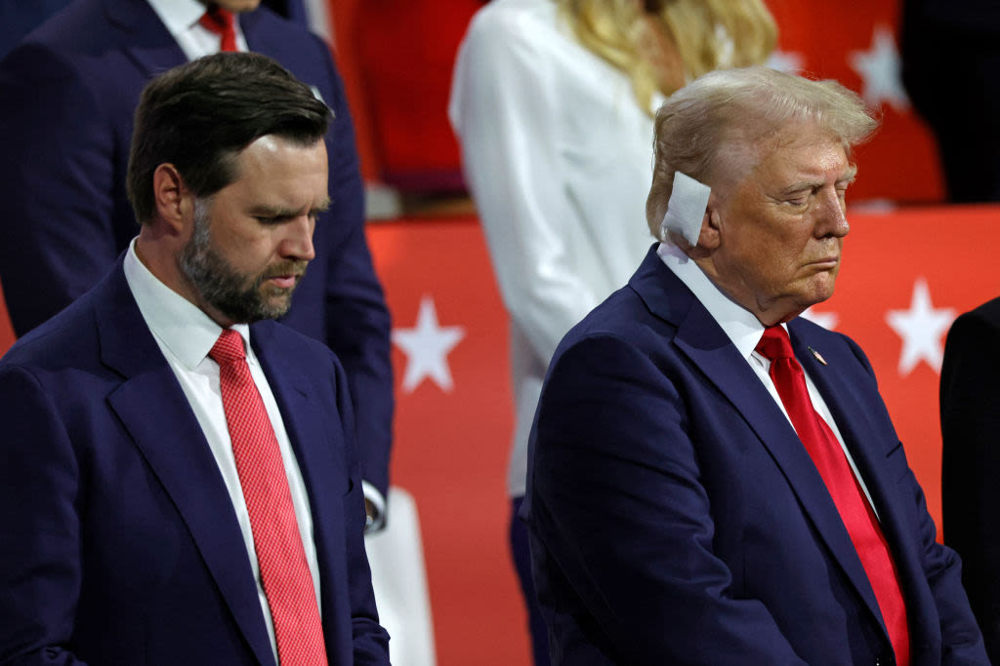

"America's Hitler" to Vice President — not gradual change, but calculated reversal
In February 2016, J.D. Vance sent a private text message to a former Yale Law School classmate. It was neither political rhetoric nor a public statement — it was the genuine judgment of a thirty-one-year-old military veteran and debut author, expressed in a private space:
"I go back and forth between thinking Trump is a cynical asshole like Nixon who wouldn't be that bad (and might even prove useful) or that he's America's Hitler. How's that for discouraging?"
("I oscillate between thinking Trump is a cynical operator like Nixon who wouldn't be that bad — and might even prove useful — or that he's America's Hitler. How's that for discouraging?")
"America's Hitler." Those three words would go on to become one of the most notorious self-contradictions in American political history — not because of their extreme wording, but because of their prescient accuracy. When Vance took the stage at the Republican National Convention in Milwaukee in July 2024 to accept the vice-presidential nomination, the young man who texted a friend in 2016 might as well have never existed.
But here is an overlooked fact: Vance's 2016 analysis of Trump was not foolish — in many respects, it was remarkably accurate. He likened Trump to "cultural heroin" — a narcotic that makes people feel temporarily better but cures nothing. [Note 2] He warned that Trump was "leading the white working class to a very dark place." [Note 3]
Looking back eight years later, not one of those predictions was wrong.
The real question is not why Vance changed his position, but a far more unsettling one: in contemporary American politics, what does telling the truth actually get you?
The answer: nothing. Unless you are willing to take it back.
The following quotations are arranged chronologically, drawn from public interviews, social media, and private communications. They are not isolated outbursts of emotion — they form a comprehensive political diagnosis. Vance's understanding of Trump in 2016 was deeper than that of most Republicans at the time.
"Mr. Trump is unfit for our nation's highest office."
"Trump is cultural heroin. He makes some feel better for a bit. But he cannot fix what ails them, and one day they'll realize it."
"I'm going to vote third party because I can't stomach Trump. I think that he's noxious and is leading the white working class to a very dark place."
"Donald Trump is frankly dangerous... He is tapping into some racially ugly attitudes, but also that he is leading people to racially ugly attitudes."
"Trump makes people I care about afraid. Immigrants, Muslims, etc. Because of this I find him reprehensible."
"I'm a Never Trump guy. I never liked him."
"Trump's biggest failure as a political leader is that he sees the worst in people and he encourages the worst in people."
The transformation did not happen overnight. According to multiple reports, Vance began seriously considering a run for the U.S. Senate from Ohio around 2019. [Note 14] By then he had spent more than two years as a venture capitalist (at Narya Capital, a fund backed by Peter Thiel), building a preliminary network between Silicon Valley and Washington.
But there was a problem: Ohio's Republican primary electorate were diehard MAGA supporters.
In 2016, Trump won 47% of the vote in the Ohio Republican primary, crushing all opponents. In 2020, he carried the state with 53% of the popular vote. Winning a Republican nomination in such a state without Trump's endorsement was virtually impossible — a reality Vance and his team understood perfectly.
A key figure emerged: Donald Trump Jr. The younger Trump forged an unlikely partnership with Vance. Both men were of similar age (born in the 1980s) and both represented the "new generation" within the Republican Party. Trump Jr. lobbied his father on Vance's behalf, serving as Vance's guide into the MAGA world. [Note 15]
In April 2021, Vance announced his Senate campaign in Ohio. In May 2022, Trump formally endorsed him. Before the endorsement, Vance was polling third or fourth; afterward, he surged and won the primary. [Note 16]
On July 5, 2021, in a Fox News interview, Vance offered his only public explanation for the shift:
"I ask folks not to judge me based on what I said in 2016, because I've been very open that I did say those critical things and I regret them, and I regret being wrong about the guy."
Note the structure of that statement: he says he "regrets" — but not regretting having told the truth; rather, "regret being wrong." This is a carefully crafted formulation. It implies that Trump proved his 2016 judgment incorrect, rather than that he himself abandoned his judgment for power. The problem is that almost every one of his 2016 predictions came true. Where was he "wrong"? He was wrong to underestimate the enduring strength of Trump's support among the Republican base, and wrong to believe that telling the truth still had market value.
By July 2024, as the vice-presidential nominee, Vance had adopted an entirely new vocabulary:
"President Trump has done more than anyone in my lifetime to earn the trust of the movement he leads. I am proud to stand beside him."
From "America's Hitler" to "proud to stand beside him." Only eight years in between.
Vance's political pivot was not merely about adopting new positions — it also involved the systematic erasure of old ones.
During the 2021-2022 campaign, Vance's team conducted an extensive digital scrub. Old blog posts were deleted. Anti-Trump tweets on Twitter were hidden or removed. A 2012 article in which he argued that immigration had a net positive impact on the American economy vanished from the internet. [Note 18]
The most striking act of censorship came from the platform itself. In February 2026, Twitter/X user @realtrumpstein posted a video of Vance saying "I'm never a trump guy" on the Charlie Rose Show in 2016. The video was promptly deleted by Elon Musk's platform. [Note 19]
@realtrumpstein refused to give up. He re-uploaded the clip with a provocation: "This video was deleted from Twitter by Elon Musk, you know what to do !!!" The re-uploaded video received 19,303 likes and 14,236 retweets — far exceeding the reach of the original post. [Note 20]
This is the digital-age Streisand Effect: every attempt at deletion only amplifies the original content further.
Vance's transformation extended far beyond his personal attitude toward Trump. On virtually every core policy issue, the 2024 Vance stands in direct opposition to the 2016 Vance.
| Policy Area | 2016 Position | 2024 Position |
|---|---|---|
| Trump | "America's Hitler," "reprehensible" | "Proud to stand beside him" |
| Trade | Root cause of Rust Belt job losses was "automation and structural change" | Embraces Trump's tariff agenda, supports protectionism |
| Immigration | Authored pro-immigration reform article in 2012; expressed concern for immigrant communities in 2016 | Supports mass deportation, opposes illegal immigration |
| Foreign Policy | Supported American global leadership and multilateral alliances | Isolationist; questions NATO; Munich speech challenged Europe |
| Abortion | Supported exceptions for rape, incest, and danger to the mother's life | Supports a national abortion ban, opposes exception clauses |
| Voting Rights | Never publicly opposed expanding voting access | Supports restricting early voting and mail-in ballots |
This table reveals an unusual pattern: Vance is not someone who fine-tunes his positions on marginal issues. He has executed a 180-degree reversal on every core topic. Moreover, these reversals all point in the same direction — toward exactly what the MAGA base expects.
Such a systematic reversal admits only two explanations: either every word Vance said in 2016 was a lie, or every word he says in 2024 is a lie. The former would make him a cold-blooded performer who was acting from the start; the latter would make him a pure opportunist who sides with whoever holds power. But a third possibility is perhaps the most unsettling: maybe the Vance of both periods genuinely believed what he was saying at the time — it is just that his "sincerity" always happened to align with whichever position was most profitable.
Vance's Never Trump period left him with an inescapable legacy: his own words are more devastating than any attack an opponent could fabricate.
Democrats and anti-Trump media recognized this immediately. MeidasNews produced a compilation titled "Hillbilly Eulogy: 14 Worst Things JD Vance Said About Trump," editing Vance's 2016 anti-Trump remarks into a three-minute video. [Note 23] The clip garnered millions of views on social media.
The r/CringeTikToks community posted a clip of Vance being kicked off a live television interview, which earned 58,951 points — the highest-scoring post about Vance in that subreddit. [Note 25] The comment section focused less on Vance's policy positions than on the transformation of his speaking style — he had begun mimicking Trump's sentence structures, intonation, even his facial expressions. One comment read: "He's not just agreeing with Trump anymore. He's becoming Trump."
In Italy, when Vance attended the Winter Olympics opening ceremony in early 2025 and his face appeared on the stadium's giant screen in Milan, the crowd erupted in deafening boos. A post in r/circled documented the moment with 24,316 points. [Note 27] The international reaction to Vance stood in stark contrast to the sentiment of the Republican base at home.
Former federal prosecutor Andrew Weissmann directed his criticism at Vance's substantive campaign record: "Vance is in large measure pretending that he is not running with Trump and just making up policies unrelated to Trump's own policies." That tweet received 11,389 likes and 2,377 retweets. [Note 28]
The third view — and the most incisive — holds that Vance's core trait is neither "sincerity" nor "hypocrisy" but calculative capacity.
Consider the child described in Chapter I, who changed his name three times: from James Bowman to James Hamel, and then to J.D. Vance. Changing names is not hypocrisy — each change served a genuine need (following a stepfather, reverting to his mother's surname, reinventing his identity). But every name change involved the same underlying operation: identify the most advantageous identity in the current environment, then adopt it.
At Yale Law School, Vance adopted the identity of a "cultural synthesist." In the Marine Corps, he adopted the identity of a "patriot." In Hillbilly Elegy, he adopted the identity of the "voice of the Rust Belt." In Thiel's venture-capital world, he adopted the identity of a "tech conservative." In 2016, he adopted the identity of a "principled Never Trumper" — because in the cultural climate of that moment, that was the most valuable identity.
Then in 2019-2021, he arrived at a new calculation: within the Republican power structure, the most valuable identity was that of a MAGA loyalist.
— William Hazlitt, via r/Dystonomicon
A commenter in the r/Dystonomicon community wrote: "A touching sentiment from a man whose wisdom once labeled Donald the Kayfabe King as 'America's Hitler' before discovering that groveling before him was a much faster route to power." ("A touching sentiment from a man who once had the wisdom to call Donald, the Kayfabe King, 'America's Hitler' — before discovering that groveling before him was a much faster route to power.") [Note 29]
That passage zeroes in on a fundamental contradiction: the content Vance wrote in Hillbilly Elegy about "personal responsibility" and "rejecting the politics of resentment" is irreconcilable with the movement he now serves — a movement built entirely on resentment, blame, and victimhood narratives.
The title of a post in r/Political_Revolution quotes what may be a summary from the comment section, but it actually captures the core charge against Vance with devastating precision: he is not dumb (the things he said were genuinely prescient), he is just a hypocritical coward (he knew the truth but chose power).
But that charge may be too simple.
Vance is no coward. A coward hides his views and never voices controversial opinions publicly. Vance's open opposition to Trump in 2016 required courage in the cultural climate of that time — especially given his identity as a conservative military veteran. His 2021 pivot to MAGA also required courage — because his 2016 remarks were all on the record, and he knew they would be weaponized against him.
A more accurate description may be this: Vance is a systematic opportunist. Every act of "courage" serves a calculated long-term objective. His 2016 anti-Trump courage served the bestseller status of Hillbilly Elegy — he told his editor that "America's problem would be the book's gain," meaning he understood the commercial value of an anti-Trump stance. [Note 13] His 2021 MAGA pivot served his Senate campaign — he knew full well that winning without Trump's endorsement was impossible.
Courage and opportunism are not contradictory here. The most successful opportunists are often the bravest — willing to place bets when everyone else is laughing, and equally resolute in changing direction at a different moment.
What makes Vance's metamorphosis unsettling is not its rarity but its transparency. Everyone can see what happened: a smart young man calculated the equation of power, then acted on the result. No ideological constraints. No moral commitments weighing him down. Only a cold assessment of what is most advantageous.
This is what the boy from Middletown learned — not at Yale Law School, not in the Marine Corps, but across three name changes, two families, and countless identity transformations:
Identity is not fixed. Convictions are not eternal. Loyalty is not conditional — it is transactional.
From "America's Hitler" to "proud to stand beside him" — the distance between them is not the distance of political positions. It is the distance of a transaction.